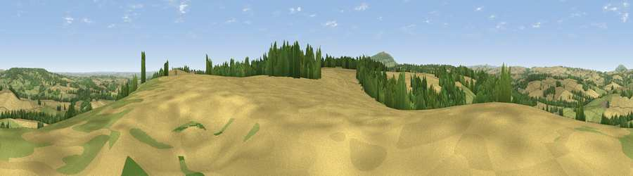

Viewpoint near Monkhopton
#14755 in England · top 39% of its area beats it · near MonkhoptonWhere it is
The exact computed spot (SO 64625 93425). Click the marker for map links.
The view, rendered

A 360° render of this exact spot computed from the terrain model, tree cover and land cover — summer colours, afternoon light, calibrated against photographs of famous viewpoints. Real trees, hedges and buildings will differ in detail.
The panorama
Grey silhouette: terrain skyline in each direction (720 bearings, Earth curvature and refraction included). Dashed green: skyline with trees (+15 m) and buildings (+8 m) as obstacles. Blue strip: how far the ground is visible on each bearing.
Where the view opens
Wedge length = distance to the farthest visible ground on that bearing (vegetation-aware). Rings at 10, 25 and 50 km.
What fills the view
58% cropland · 28% grassland · 12% woodland ·
Angular shares of the visible panorama (visual magnitude), not map area. Landscape diversity 0.42 (0–1 Shannon).
Key numbers
More beautiful places nearby
The staircase of upgrades: each row has a higher view potential than everything closer. Driving times are estimates from straight-line distance, calibrated against real road routing — check an actual route before setting out.
| Place | Direction | Drive | Score |
|---|---|---|---|
| Aston Hill | ESE · 1 km | ~4 min | 60.9 |
| Viewpoint near Monkhopton | E · 2 km | ~6 min | 61.8 |
| Bourton Westwood | NW · 6 km | ~13 min | 64.0 |
| Viewpoint near Much Wenlock | N · 7 km | ~15 min | 69.2 |
| Viewpoint near Harley | NW · 7 km | ~15 min | 76.8 |
| Viewpoint near Harley | NW · 8 km | ~15 min | 79.9 |
| Viewpoint near Abdon | SW · 9 km | ~17 min | 82.6 |
| Viewpoint near Burwarton | SSW · 10 km | ~19 min | 83.4 |
52.53753, -2.52298 · source: screening · position refined by local search. Computed location — check access rights before visiting.